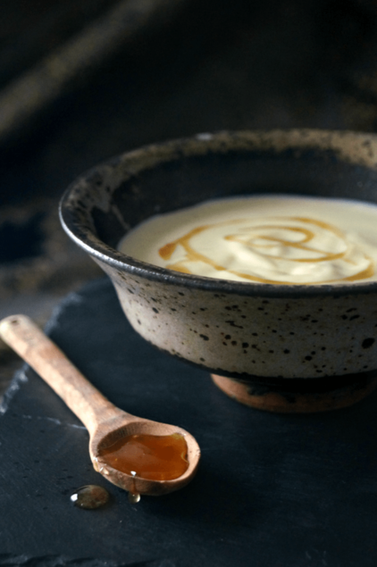

Honey Pudding

Description
Originally a Khajiit dish, this pudding has evolved without the moonsugar, letting the natural sweet flavors of the honey shine through. Different varieties of honey will each give a slightly different flavor, depending on the flowers it was made from.
Ingredients
- 2 cups whole milk
- 1 whole vanilla bean, or 1 tsp. extract
- 1/4 cup white sugar
- 1/2 cup honey
- 1 cup heavy cream or whipping cream
- 3 Tbs. cornstarch
- 3 egg yolks
- pinch salt
Steps
- Pour the milk into a medium pot over medium heat.
- Split the vanilla bean down the middle with a sharp knife and scrape out the seeds.
- Add the seeds and the pod to the pot of milk, and bring to just under a boil. Add the sugar and honey, and stir for a few minutes to allow the vanilla to steep into the milk.
- Fish out the pod, scrape any remaining seeds from it, and discard.
- In a separate bowl, whisk together the heavy cream, cornstarch, egg yolks, and salt. While still whisking, pour a little of the hot milk into the bowl to temper the mixture, then pour everything back into the pot.
- Cook for around 5 minutes more, stirring all the while, until the mixture has thickened noticeably.
- Remove from heat, strain into a clean bowl, and cover with plastic. Chill for at least an hour to help the pudding set.